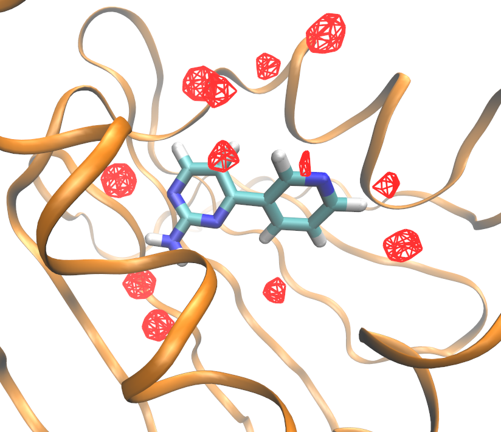

To come back to the tutorial index, click here.
fragment.pdb - the structure of the small fragment molecule in PDB formatprotein.pdb - the structure of the N-terminal domain of HSP90 in PDB format
python2.7 $PROTOMSHOME/protoms.py -s jaws1 -p protein.pdb -l fragment.pdbthis sets up one JAWS stage 1 simulation, to locate the waters which can be placed 2 A around your ligand.
The simulations will run 5 m equilibration steps and 40 m production steps. Output will be printed to files every 100 k moves.
the -s jaws1 argument tells the script to setup a JAWS stage 1 simulation. The -p and -l arguments specifies the protein and the ligand, respectively.
You can visualise the systems that will be simulated with for instance VMD:
vmd -m protein.pdb fragment.pdb water_clr.pdb jaws1_wat.pdb jaws1_box.pdb
$PROTOMSHOME/protoms3 run_bnd.cmd
The calculations will take approximately 10 h to complete.
out and run:
python2.7 $PROTOMSHOME/tools/divide_pdb.pyand then, to visualize the positions of the waters at one given point in the simulation, for example, at the middle of your production run, type:
vmd snapshot_200.pdband try to see if there was any water in the binding site (the residue name of your jaws waters is "WAT"). Remember that, which ever jaws waters you may find, are the "on" — fully interacting — waters (with θ > 0.95, where θ corresponds to the scaling of their interactions). But looking at each snapshot individually is hard to get a whole picture of where your waters were distributed throughout the simulation. To get a more visual picture of this we produce and visualize a water density file. To generate such a file run:
python2.7 $PROTOMSHOME/tools/calc_density.py -f all.pdb -r wa1and the file grid.dx will be produced. Such a file can be visualized in vmd. Try looking at it with:
vmd -m grid.dx ../protein.pdb ../fragment.pdb
You should be looking at something similar to this (after fiddling a bit with the graphical representation options in VMD):
A different visualization option are the clusters. These can be generated going to your out folder and using the following command
python2.7 $PROTOMSHOME/tools/calc_clusters.py -f all.pdb -m WA1and then visualized with
vmd -m clusters.pdb ../protein.pdb ../fragment.pdb
You should be looking at something similar to the image below, after tweaking the graphical representation options in VMD. It is probably interesting to display only the most populated clusters by showing only resid 1 to 5 , for example, since clusters are assigned residue id in order of most populated clusters.
protoms.py as above, protoms will try to locate the waters found in a box with edges at least 2A away from any of your ligand atoms. However, you may wish to find the location of waters in any area of your simulation (though normally it will include your binding site).
You can define any desired area (in box shape) of your simulation to run JAWS on, by specifying the box origin and dimentions with the flag --gcmcbox, such as it is done below
python2.7 $PROTOMSHOME/protoms.py -l fragment.pdb -p protein.pdb -s jaws1 -c big --gcmcbox 59 31 23 8 8 8where the box will be a cube of 8A, with the "lower" corner in x = 59, y = 31, z = 23, and the "higher" corner in x = 67, y = 39, z = 31 (all values in A). The -c flag specifies the base-name of the generated
.cmd files; it has been applied in this example to avoid overwritting the previously generated run_bnd.cmd file.
--gcmcwater. The amount of waters included as JAWS probes can have an effect in the results of your simulation. Feel free to play around with this parameter. It can be specified as shown below
python2.7 $PROTOMSHOME/protoms.py -l fragment.pdb -p protein.pdb -s jaws1 -c big --gcmcbox 59 31 23 8 8 8 --gcmcwater 10
--nequil - this controls the number of equilibration steps--nprod - this controls the number of production steps
python2.7 $PROTOMSHOME/protoms.py -s jaws1 -p protein.pdb -l fragment.pdb --nequil 10E6 --nprod 50E6
you will run 10 m equiliration steps and 50 m production steps (instead of the 5 m and 40 m that is default)
--repeats or just -r.
by typing for instance
python2.7 $PROTOMSHOME/protoms.py -s jaws1 -p protein.pdb -l fragment.pdb -r 5
you will create 5 input files for the JAWS calculation. Therefore, you also need to execute ProtoMS 5 times with the different input files. The output will be in 5 different folders, e.g. out1_bnd and out2_bnd.
fragment.prepi = the z-matrix and atom types of the fragment in Amber formatfragment.frcmod = additional parameters not in GAFFfragment.zmat = the z-matrix of the fragment used to sample it in the MC simulationfragment.tem = the complete template (force field) file for the fragment in ProtoMS formatprotein_scoop.pdb = the truncated protein structure
jaws1_water.pdb = the waters that will be treated as jaws-particles (fading soltues)jaws1_box.pdb = a visual representation of the dimensions in which your jaws waters are constrainedwater.pdb = the cap of water solvating the protein-ligand systemwater_clr.pdb = the cap of water solvating the protein-ligand system, minus any water molecule which was overlapping with the JAWS simulation arearun_bnd.cmd = the ProtoMS input file for the JAWS simulationjaws1 0 softcore1 solute all softcoreparams coul 1 delta 0.2 deltacoul 2.0 power 6 soft66
jaws1 line indicates the initial value of θ for the jaws-waters.
originx 59.774 originy 31.007 originz 20.931 x 13.02 y 8.188 z 8.402
originx, originy, originz, x, y, z parameters indicate the origin and length of the jaws-box in each spatial coordinate.
protoms.py. This is relevant in cases where you are interested in specifying certain parameters which are pre-determined by protoms.py.
fragment.pdb.
fragment.pdb contains a directive, telling ProtoMS the name of the solute. The line should read HEADER XDK, where xdk is the residue name in the fragment, and can be added by typing
sed -i "1iHEADER XDK" fragment.pdb
python2.7 $PROTOMSHOME/tools/ambertools.py -f fragment.pdb -n XDK
and this will execute the AmberTools programs antechamber and parmchk, creating the files fragment.prepi and fragment.frcmod, respectively.
python2.7 $PROTOMSHOME/tools/build_template.py -p fragment.prepi -f fragment.frcmod -o fragment.tem -n XDK
this will creates the files fragment.tem containing the ProtoMS template file and fragment.zmat. It is a good idea to check this files to see if the script has defined the molecule properly.
$PROTOMSHOME/data/gcmc_wat.tem.
python2.7 $PROTOMSHOME/tools/convertatomnames.py -p protein.pdb -o protein_pms.pdb -s amber -c $PROTOMSHOME/data/atomnamesmap.dat
The converted structure will be in protein_pms.pdb. This execution assumes that the Amber naming convention is used in protein.pdb.
python2.7 $PROTOMSHOME/tools/convertwater.py -p protein_pms.pdb -o protein_pms_t4p.pdb
creating protein_pms_t4p.pdb.
python2.7 $PROTOMSHOME/tools/scoop.py -p protein_pms_t4p.pdb -l fragment.pdb -o protein_scoop.pdb
The protein scoop is centred on the fragment molecule and all residue further than 20 A are cut-away. The scoop is written to protein_scoop.pdb
python2.7 $PROTOMSHOME/tools/solvate.py -b $PROTOMSHOME/data/wbox_tip4p.pdb -s fragment.pdb -pr protein_scoop.pdb -o water.pdb -g droplet
this will create a droplet with 30 A radius centred on the fragment molecule. The droplet is written to water.pdb
solvate.py script adds the crystallographic waters from the scoop to the droplet. Therefore, we need to remove them from the scoop PDB-file, to avoid duplicates.
sed -i -e "/T4P/d" -e "/TER/d" protein_scoop.pdb
python2.7 $PROTOMSHOME/tools/distribute_waters.py -b 59 31 23 8 8 8 -m 10 -o jaws1_wat.pdb
with this command, the file jaws1_water.pdb will be generated. It will contain 10 water molecules (flag -m). The box dimensions to which the waters will be constrained are specified with the flag -b, and this information on the box limits is stored in the first line of the jaws1_water.pdb file.
python2.7 $PROTOMSHOME/tools/clear_gcmcbox.py -b jaws1_wat.pdb -s water.pdb -o water_clr.pdb
Feel free to check the difference between water.pdb and water_clr.pdb, there may be a few less waters in the later, but there might be no difference at all.
Now we have all the files need to run the simulation. As you noticed, there is some difference in the files produced with this step-by-step procedure and those created with protoms.py.
python2.7 $PROTOMSHOME/tools/generate_input.py -s jaws1 -p protein_scoop.pdb -l fragment.pdb -t fragment.tem -pw water_clr.pdb --gcmcwater jaws1_wat.pdb -o run
creating run_bnd.cmd.
1. Murray et.al. J. Med. Chem., 2010, 53(16), pp 5942-5955
2. Michel et.al. J. Phys. Chem. B, 2009, 113(40), pp 13337-13346